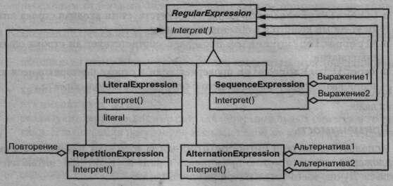
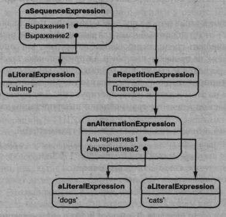
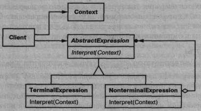

Паттерн Interpreter
Название и классификация паттерна
Интерпретатор – паттерн поведения классов.
Назначение
Для заданного языка определяет представление его грамматики, а также интерпретатор предложений этого языка.
Мотивация
Если некоторая задача возникает часто, то имеет смысл представить ее конкретные проявления в виде предложений на простом языке. Затем можно будет создать интерпретатор, который решает задачу, анализируя предложения этого языка.
Например, поиск строк по образцу – весьма распространенная задача. Регулярные выражения – это стандартный язык для задания образцов поиска. Вместо того чтобы программировать специализированные алгоритмы для сопоставления строк с каждым образцом, не проще ли построить алгоритм поиска так, чтобы он мог интерпретировать регулярное выражение, описывающее множество строк-образцов?
Паттерн интерпретатор определяет грамматику простого языка, представляет предложения на этом языке и интерпретирует их. Для приведенного примера паттерн описывает определение грамматики и интерпретации языка регулярных выражений.
Предположим, что они описаны следующей грамматикой:
expression ::= literal | alternation | sequence | repetition |1( ' expression ' ) ' alternation : : = expression ' | ' expression sequence : : = expression ' & ' expression repetition : : = expression ' * ' literal : : = ' a 1 | ' b ' | ' c ' | . . . { ' a 1 | ' b ' | ' c 1 | ... } *
Паттерн интерпретатор использует класс для представления каждого пра-ила грамматики. Символы в правой части правила - это переменные экземпляров таких классов. Для представления приведенной выше грамматики требуется пять классов: абстрактный класс RegularExpression и четыре его подкласса LiteralExpression, AlternationExpression, SequenceExpression и RepetitionExpression. В последних трех подклассах определены переменные для хранения подвыражений.
Каждое регулярное выражение, описываемое этой грамматикой, представляется в виде абстрактного синтаксического дерева, в узлах которого находятся экземпляры этих классов. Например, дерево  представляет выражение
raining & (dogs | cats) *
Мы можем создать интерпретатор регулярных выражений, определив в каждом подклассе RegularExpression операцию Interpret, принимающую в качестве аргумента контекст, где нужно интерпретировать выражение. Контекст состоит из входной строки и информации о том, как далеко по ней мы уже продвинулись. В каждом подклассе RegularExpression операция Interpret производит сопоставление с оставшейся частью входной строки. Например:
- iteralExpression проверяет, соответствует ли входная строка литералу, который хранится в объекте подкласса;
- AlternationExpression проверяет, соответствует ли строка одной из альтернатив;
- RepetitionExpression проверяет, если в строке повторяющиеся вхождения выражения, совпадающего с тем, что хранится в объекте.
И так далее.
Применимость
Используйте паттерн интерпретатор, когда есть язык для интерпретации, предложения которого можно представить в виде абстрактных синтаксических деревьев. Лучше всего этот паттерн работает, когда:
- рамматика проста. Для сложных грамматик иерархия классов становится слишком громоздкой и неуправляемой. В таких случаях лучше применять генераторы синтаксических анализаторов, поскольку они могут интерпре тировать выражения, не строя абстрактных синтаксических деревьев, что экономит память, а возможно, и время;
- эффективность не является главным критерием. Наиболее эффективные интерпретаторы обычно не работают непосредственно с деревьями, а сначала транслируют их в другую форму. Так, регулярное выражение часто преобразуют в конечный автомат. Но даже в этом случае сам транслятор можно реализовать с помощью паттерна интерпретатор.
Структура
Участники
-
AbstractExpression (RegularExpression) - абстрактное выражение:
- объявляет абстрактную операцию Interpret, общую для всех узлов в абстрактном синтаксическом дереве;
-
TerminalExpression (LiteralExpression) – терминальное выражение:
- реализует операцию Interpret для терминальных символов грамматики;
- необходим отдельный экземпляр для каждого терминального символа в предложении;
-
NonterminaIExpression (AlternationExpression,RepetitionExpression, SequenceExpressions) – нетерминальное выражение:
- по одному такому классу требуется для каждого грамматического правила R :: = R l R 2 ... R п ;
- хранит переменные экземпляра типа AbstractExpression для каждого символа от R l до R п ;
- реализует операцию Interpret для нетерминальных символов грамматики. Эта операция рекурсивно вызывает себя же для переменных, представляющих ./?,,... /? п ;
-
Context – контекст:
- содержит информацию, глобальную по отношению к интерпретатору;
-
Client – клиент:
- строит (или получает в готовом виде) абстрактное синтаксическое дерево, представляющее отдельное предложение на языке с данной грамматикой. Дерево составлено из экземпляров классов Nonterminal-Expression и Terminal-Expression;
- вызывает операцию Interpret.
Отношения
- клиент строит (или получает в готовом виде) предложение в виде абстрактного синтаксического дерева, в узлах которого находятся объекты классов NonterminalExpression и Terminal-Expression. Затем клиент инициализирует контекст и вызывает операцию Interpret;
- в каждом узле вида NonterminalExpression через операции Interpret определяется операция Interpret для каждого подвыражения. Для класса TerminalExpression операция Interpret определяет базу рекурсии;
- операции Interpret в каждом узле используют контекст для сохранения и доступа к состоянию интерпретатора.
Результаты
У паттерна интерпретатор есть следующие достоинства и недостатки:
- грамматику легко изменять и расширять. Поскольку для представления грамматических правил в паттерне используются классы, то для изменения или расширения грамматики можно применять наследование. Существующие выражения можно модифицировать постепенно, а новые определять как вариации старых;
- простая реализация грамматики. Реализации классов, описывающих узлы абстрактного синтаксического дерева, похожи. Такие классы легко кодировать, а зачастую их может автоматически сгенерировать компилятор или генератор синтаксических анализаторов;
- сложные грамматики трудно сопровождать. В паттерне интерпретатор определяется по меньшей мере один класс для каждого правила грамматики (для правил, определенных с помощью формы Бэкуса-Наура - BNF, может понадобиться и более одного класса). Поэтому сопровождение грамматики с большим числом правил иногда оказывается трудной задачей. Для ее решения могут быть применены другие паттерны (см. раздел «Реализация»). Но если грамматика очень сложна, лучше прибегнуть к другим методам, например воспользоваться генератором компиляторов или синтаксических анализаторов;
- добавление новых способов интерпретации выражений. Паттерн интерпретатор позволяет легко изменить способ вычисления выражений. Например, реализовать красивую печать выражения вместо проверки входящих в него типов можно, просто определив новую операцию в классах выражений. Если вам приходится часто создавать новые способы интерпретации выражений, подумайте о применении паттерна посетитель. Это поможет избежать изменения классов, описывающих грамматику.
Реализация
У реализаций паттернов интерпретатор и компоновщик есть много общего. Следующие вопросы относятся только к интерпретатору:
- создание абстрактного синтаксического дерева. Паттерн интерпретатор не поясняет, как создавать дерево, то есть разбор выражения не входит в его задачу. Создать дерево разбора может таблично-управляемый или написанный вручную (обычно методом рекурсивного спуска) анализатор, а также сам клиент;
- определение операции Interpret. Определять операцию Interpret в классах выражений необязательно. Если создавать новые интерпретаторы приходится часто, то лучше воспользоваться паттерном посетитель и поместить операцию Interpret в отдельный объект-посетитель. Например, для грамматики языка программирования будет нужно определить много операций над абстрактными синтаксическими деревьями: проверку типов, оптимизацию, генерацию кода и т.д. Лучше, конечно, использовать посетителя и не определять эти операции в каждом классе грамматики;
-
разделение терминальных символов с помощью паттерна приспособленец. Для грамматик, предложения которых содержат много вхождений одного и того же терминального символа, может оказаться полезным разделение этого символа. Хорошим примером служат грамматики компьютерных программ, поскольку в них каждая переменная встречается в коде многократно. В примере из раздела «Мотивация» терминальный символ dog (для моделирования которого используется класс LiteralExpression) может попадаться много раз.
В терминальных узлах обычно не хранится информация о положении в абстрактном синтаксическом дереве. Необходимый для интерпретации контекст предоставляют им родительские узлы. Налицо различие между разделяемым (внутренним) и передаваемым (внешним) состояниями, так что вполне применим паттерн приспособленец.
Например, каждый экземпляр класса LiteralExpression для dog получает контекст, состоящий из уже просмотренной части строки. И каждый такой экземпляр делает в своей операции Interpret одно и то же - проверяет, содержит ли остаток входной строки слово dog, - безотносительно к тому, в каком месте дерева этот экземпляр встречается.
Пример кода
Мы приведем два примера. Первый - законченная программа на Smalltalk для проверки того, соответствует ли данная последовательность регулярному выражению. Второй - программа на C++ для вычисления булевых выражений.
Программа сопоставления с регулярным выражением проверяет, является ли строка корректным предложением языка, определяемого этим выражением. Регулярное выражение определено следующей грамматикой:
expression ::= literal | alternation | sequence | repetition | ' ( ' expression ' ) ' alternation ::= expression 'Г expression sequence ::= expression '&' expression repetition ::= expression 'repeat' literal ::= 'a <sup>1</sup> | 'b' | 'c | ... { 'a' | 'b' | 'c' | ... }*
Между этой грамматикой и той, что приведена в разделе «Мотивация», есть небольшие отличия. Мы слегка изменили синтаксис регулярных выражений, поскольку в Smalltalk символ * не может быть постфиксной операцией. Поэтому вместо него мы употребляем слово repeat. Например, регулярное выражение
( ( ' d o g ' | 'cat ') repeat & 'weather')
соответствует входной строке 'dog dog cat weather'.
Для реализации программы сопоставления мы определим пять классов, упомянутых на стр. 237. В классе SequenceExpression есть переменные экземпляра expression1 и expression2 для хранения ссылок на потомков в дереве. Класс AlternationExpression хранит альтернативы в переменных экземпляра alternativel и alternative2, а класс RepetitionExpression - повторяемое выражение в переменной экземпляра repetition. В классе LiteralExpression есть переменная экземпляра components для хранения списка объектов (скорее всего, символов), представляющих литеральную строку, которая должна соответствовать входной строке.
Операция match: реализует интерпретатор регулярных выражений. В каждом из классов, входящих в абстрактное синтаксическое дерево, эта операция реализована. Ее аргументом является переменная inputState, описывающая текущее состояние процесса сопоставления, то есть уже прочитанную часть входной строки.
Текущее состояние характеризуется множеством входных потоков, представляющим множество тех входных строк, которое регулярное выражение могло бы к настоящему моменту принять. (Это примерно то же, что регистрация всех состояний, в которых побывал бы эквивалентный конечный автомат, распознавший входной поток до данного места.)
Текущее состояние наиболее важно для операции repeat. Например, регулярному выражению
'а' repeat
интерпретатор сопоставил бы строки "а", "аа", "ааа" и т.д. А регулярному выражению
'а' repeat & 'be'
строки " abc", " aabc", " aaabc" и т.д. Но при наличии регулярного выражения
'а' repeat & 'abc'
сопоставление входной строки "aabc" с подвыражением " ' a ' repeat" дало бы два потока, один из которых соответствует одному входному символу, а другой - двум. Из них лишь поток, принявший один символ, может быть сопоставлен с остатком строки " abc".
Теперь рассмотрим определения match: для каждого класса, описывающего регулярное выражение. SequenceExpression производит сопоставление с каж дым подвыражением в определенной последовательности. Обычно потоки ввода не входят в его состояние input State.
match: inputState ^ expression2 match: (expressionl match: inputState).
AlternationExpression возвращает результат, объединяющий состояния всех альтернатив. Вот определение match: для этого случая:
match: inputState | finalState | finalState := alternative1 match: inputState. finalState addAll: (alternative2 match: inputState). ^ finalState
Операция match: для RepetitionExpression пытается найти максимальное количество состояний, допускающих сопоставление:
match: inputState | aState finalState | aState := inputState. finalState := inputState copy. [aState isEmpty] whileFalse: [aState := repetition match: aState. finalState addAll: aState]. ^ finalState
На выходе этой операции мы обычно получаем больше состояний, чем на входе, поскольку RepetitionExpression может быть сопоставлено с одним, двумя или более вхождениями повторяющегося выражения во входную строку. В выходном состоянии представлены все возможные варианты, а решение о том, какое из состояний правильно, принимается последующими элементами регулярного выражения.
Наконец, операция match: для LiteralExpression сравнивает свои компоненты с каждым возможным входным потоком и оставляет только те из них, для которых попытка завершилась удачно:
match: inputState I finalState tStream I finalState := Set new. inputState do: [:stream I tStream := stream copy. (tStream nextAvailable: components size ) = components ifTrue: [finalState add: tStream] ]. ^ finalState
Сообщение next Available: выполняет смещение вперед по входному потоку. Это единственная операция match:, которая сдвигается по потоку. Обратите внимание: возвращаемое состояние содержит его копию, поэтому можно быть уверенным, что сопоставление с литералом никогда не изменяет входной поток. Это существенно, поскольку все альтернативы в Alternat ionExpression должны «видеть» одинаковые копии входного потока.
Таким образом, мы определили классы, составляющие абстрактное синтаксическое дерево. Теперь опишем, как его построить. Вместо того чтобы создавать анализатор регулярных выражений, мы определим некоторые операции в классах RegularExpression, так что вычисление выражения языка Smalltalk приведет к созданию абстрактного синтаксического дерева для соответствующего регулярного выражения. Тем самым мы будем использовать встроенный компилятор Smalltalk, как если бы это был анализатор синтаксиса регулярных выражений.
Для построения дерева нам понадобятся операции "|", "repeat" и "&" над регулярными выражениями. Определим эти операции в классе RegularExpression:
& aNode ^ SequenceExpression new expressionl: self expression2: aNode asRExp repeat ^ RepetitionExpression new repetition: self | aNode ^ AlternationExpression new alternativel: self alternative2: aNode asRExp asRExp ^ self
Операция asRExp преобразует литералы в RegularExpression. Следующие операции определены в классе String:
& aNode ^ SequenceExpression new expressionl: self asRExp expression2: aNode asRExp repeat ^ RepetitionExpression new repetition: self | aNode ^ AlternationExpression new alternativel: self asRExp alternative2: aNode asRExp asRExp ^ LiteralExpression new components: self
Если бы мы определили эти операции выше в иерархии классов, например SequenceableCollection в Smalltalk-80, IndexedCollection в Smalltalk/V, то они появились бы и в таких классах, как Array и OrderedCollection. Это позволило бы сопоставлять регулярные выражения с последовательностями объектов любого вида.
Второй пример – это система для манипулирования и вычисления булевых выражений, реализованная на C++. Терминальными символами в этом языке являются булевы переменные, то есть константы true и false. Нетерминальные символы представляют выражения, содержащие операторы and, or и not. Приведем определение грамматики:
BooleanExp ::= VariableExp | Constant | OrExp I AndExp | NotExp | ' ( ' BooleanExp ' ) ' AndExp ::= BooleanExp 'and' BooleanExp OrExp : : = BooleanExp ' or ' BooleanExp NotExp ::= 'not' BooleanExp Constant ::= 'true' | 'false 1 VariableExp ::= 'A' | 'B' | ... |.'X' | 'Y 1 I 'Z'
Определим две операции над булевыми выражениями. Первая - Evaluate - вычисляет выражение в контексте, где каждой переменной присваивается истинное или ложное значение. Вторая - Replace - порождает новое булево выражение, заменяя выражением некоторую переменную. Эта операция демонстрирует, что паттерн интерпретатор можно использовать не только для вычисления выражений; в данном случае он манипулирует самим выражением.
Здесь мы подробно опишем только классы BooleanExp, VariableExp и AndExp. Классы OrExp и NotExp аналогичны классу AndExp. Класс Constant представляет булевы константы.
В классе BooleanExp определен интерфейс всех классов, которые описывают булевы выражения:
class BooleanExp { public: BooleanExp ( ) ; virtual -BooleanExp (); virtual bool Evaluate (Contextk) = 0; virtual BooleanExp* Replace (const char*, BooleanExp&) = 0; virtual BooleanExp* Copy ( ) const = 0; };
Класс Context определяет отображение между переменными и булевыми значениями, которые в C++ представляются константами true и false. Интерфейс этого класса следующий:
class Context { public: bool Lookup (const char*) const; void Assign (VariableExp*, bool); };
Класс VariableExp представляет именованную переменную:
class VariableExp : public BooleanExp { public: VariableExp(const char*); virtual -VariableExp(); virtual bool Evaluate(Contexts); virtual BooleanExp* Replace(const char*, BooleanExp&); virtual BooleanExp* Copy() const; private: char* _name; };
Упрощая задачу, мы игнорируем приоритеты операторов и предполагаем, что их учет возложен на объект, строящий дерево разбора.
Конструктор класса принимает в качестве аргумента имя переменной:
VariableExp::VariableExp (const char* name) { _name = strdup(name); }
Вычисление переменной возвращает ее значение в текущем контексте:
bool VariableExp::Evaluate (Contexts aContext) { return aContext.Lookup(_name); }
Копирование переменной возвращает новый объект класса VariableExp:
BooleanExp* VariableExp::Copy () const { return new VariableExp(_name); }
Чтобы заменить переменную выражением, мы сначала проверяем, что у переменной то же имя, что было передано ранее в качестве аргумента:
BooleanExp* VariableExp::Replace ( const char* name, BooleanExp& exp ) { if (strcmptname, _name) == 0) { return exp.Copy(); } else { return new VariableExp(_name); } }
Класс AndExp представляет выражение, получающееся в результате применения операции логического И к двум булевым выражениям:
class AndExp : public BooleanExp { public: AndExp(BooleanExp*, BooleanExp*); virtual -AndExp();• virtual bool Evaluate(Contexts); virtual BooleanExp* Replace(const char*, BooleanExpS); virtual BooleanExp* CopyO const; private: BooleanExp* _operandl; BooleanExp* _operand2; }; AndExp::AndExp (BooleanExp* opl , BooleanExp* op2 ) { _operandl = opl; _operand2 = op2; }
При решении AndExp вычисляются его операнды и результат применения к ним операции логического И возвращается:
bool AndExp::Evaluate (Context^ aContext) { return _operandl->Evaluate (aContext) && _operand2->Evaluate (aContext) ; } BooleanExp* AndExp::Replace (const char* name, BooleanExpk exp) { return new AndExp( _operandl->Replace(name, exp), _operand2->Replace(name, exp) ); }
Определим теперь булево выражение
(true and x) or (у and (not x ) )
и вычислим его для некоторых конкретных значений булевых переменных х и у:
BooleanExp* expression; Context context; VariableExp* x = new V a r i a b l e E x p ( " X " ) ; VariableExp* у = new V a r i a b l e E x p ( " Y " ) ; expression = new OrExpt new AndExp(new Constant(true), new AndExp(y, new NotExp(x)) x), ); context.Assign(x, f a l s e ) ; context.Assign(y, true); bool result = expression->Evaluate(context);
С такими значениями х и у выражение равно true. Чтобы вычислить его при других значениях переменных, достаточно просто изменить контекст.
И наконец, мы можем заменить переменную у новым выражением и повторить вычисление:
VariableExp* z = new VariableExpf"Z") ; NotExp not_z(z) ; BooleanExp* replacement = expression->Replace("Y", not_z); context.Assign(z, true); result = replacement->Evaluate(context); new AndExp(y, new NotExp(x)) x), ); context.Assign(x, f a l s e ) ; context.Assign(y, true); bool result = expression->Evaluate(context);
На этом примере проиллюстрирована важная особенность паттерна интерпретатор: «интерпретация» предложения может означать самые разные действия. Из трех операций, определенных в классе BooleanExp, Evaluate наиболее близка к нашему интуитивному представлению о том, что интерпретатор должен интерпретировать программу или выражение и возвращать простой результат.
Но и операцию Replace можно считать интерпретатором. Его контекстом является имя заменяемой переменной и подставляемое вместо него выражение, а результатом служит новое выражение. Даже операцию Сору допустимо рассматривать как интерпретатор с пустым контекстом. Трактовка операций Replace и Сору как интерпретаторов может показаться странной, поскольку это всего лишь базовые операции над деревом. Примеры в описании паттерна посетитель демонстрируют, что все три операции разрешается вынести в отдельный объект-посетитель «интерпретатор», тогда аналогия станет более очевидной.
Паттерн интерпретатор – это нечто большее, чем распределение некоторой операции по иерархии классов, составленной с помощью паттерна компоновщик. Мы рассматриваем операцию Evaluate как интерпретатор, поскольку иерархию классов BooleanExp мыслим себе как представление некоторого языка. Если бы у нас была аналогичная иерархия для представления агрегатов автомобиля, то вряд ли мы стали бы считать такие операции, как Weight (вес) и Сору (копирование), интерпретаторами, несмотря на то что они распределены по всей иерархии классов, - просто мы не воспринимаем агрегаты автомобиля как язык. Тут все дело в точке зрения: опубликуй мы грамматику агрегатов автомобиля, операции над ними можно было трактовать как способы интерпретации соответствующего языка.
Известные применения
Паттерн интерпретатор широко используется в компиляторах, реализованных с помощью объектно-ориентированных языков, например в компиляторах Smalltalk. В языке SPECTalk этот паттерн применяется для интерпретации форматов входных файлов [Sza92]. В библиотеке QOCA для разрешения ограничений он применяется для вычисления ограничений [HHMV92].
Если рассматривать данный паттерн в самом общем виде (то есть как операцию, распределенную по иерархии классов, основанной на паттерне компоновщик), то почти любое применение компоновщика содержит и интерпретатор. Но применять паттерн интерпретатор лучше в тех случаях, когда иерархию классов можно представлять себе как описание языка.
Родственные паттерны
Компоновщик: абстрактное синтаксическое дерево - это пример применения паттерна компоновщик.
Приспособленец показывает варианты разделения терминальных символов в абстрактном синтаксическом дереве.
Итератор: интерпретатор может пользоваться итератором для обхода структуры.
Посетителя можно использовать для инкапсуляции в одном классе поведения каждого узла абстрактного синтаксического дерева.